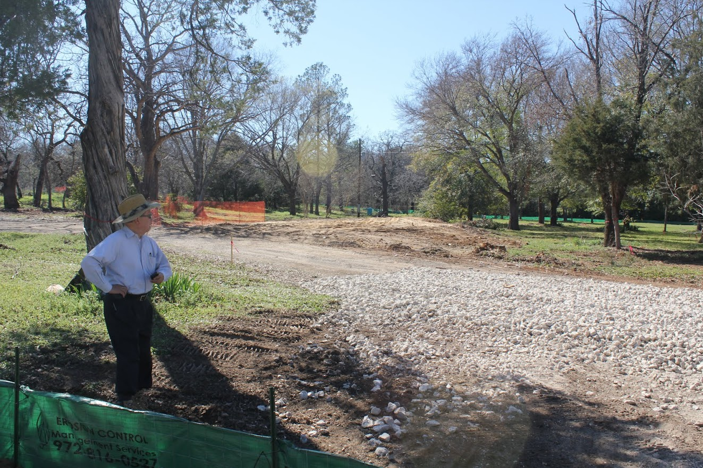

承先啟後: 三十年的呼召
三十年的恩典之路

三十年的恩典之路

三十年的恩典之路
三十年的恩典之路
三十年的恩典之路

三十年的恩典之路
「耶和華啊，榮耀不要歸給我們，不要歸給我們，要因祢的慈愛和誠實歸在祢的名下。」
— 詩篇 115:1
約瑟的生命：恩寵與苦難的五個循環
- 第一個循環：父親的寵愛 → 兄弟的嫉妒
- 第二個循環：波提乏家中 → 誣告入獄
- 第三個循環：監獄中的信任 → 被遺忘
- 第四個循環：為法老解夢 → 七年饑荒
- 第五個循環：與家人重聚 → 文化張力
約瑟的兩個兒子：新一代的身份
瑪拿西 (Manasseh)
“使之忘記”
- 忘記一切的困苦
- 忘記父家
- 需要放下過去的傷痛
以法蓮 (Ephraim)
“使之昌盛”
- 在受苦之地昌盛
- 新的身份
- 神在新地賜福
「約瑟給長子起名叫瑪拿西，因為他說：神使我忘了一切的困苦和我父的全家。他給次子起名叫以法蓮，因為他說：神使我在受苦的地方昌盛。」
— 創世記 41:51-52
下一代的呼召：在兩個世界之間
雅各的祝福：次子在長子之上
「他父親不從，說：我知道，我兒，我知道。他也必成為一族，也必昌大。只是他的兄弟將來比他還大；他兄弟的後裔要成為多族。」
— 創世記 48:19
以法蓮（次子）被立在瑪拿西（長子）之上
神常常使用新一代
在受苦之地建立新的根基
教會的呼召：效法約瑟
恩寵與苦難的循環：教會的真實
「從前你們的意思是要害我，但神的意思原是好的，要保全許多人的性命，成就今日的光景。」
— 創世記 50:20
讓下一代帶領我們
教會必須學習：
- 仰望下一代，如同雅各祝福以法蓮
- 放手讓他們領導，用新的方式敬拜與服事
- 從原居地的根轉向基督的根
- 在新地建立新的屬靈家園
「我們不將這些事向他們的子孫隱瞞，要將耶和華的美德、祂的能力，並祂奇妙的作為述說給後代聽。」
— 詩篇 78:4
下一代事工的異象
全方位的青少年事工
「主要賜給他們華冠代替灰塵，喜樂油代替悲哀，讚美衣代替憂傷的靈。」
— 以賽亞書 61:3
從根源到根基的轉化
這不是背棄傳統，而是在基督裡更新傳承
約瑟最後的見證
「約瑟對他弟兄們說：我要死了，但神必定看顧你們，領你們從這地上去，到祂起誓所應許給亞伯拉罕、以撒、雅各之地。」
— 創世記 50:24
我們的呼召：三十年後的新起點
教會的未來在於：
- 擁抱恩寵與苦難的循環 — 知道神在其中工作
- 培育下一代領袖 — 如同雅各祝福以法蓮
- 從文化根源轉向基督根基 — 在新地昌盛
- 跨世代同行 — 彼此學習、彼此建造
讓我們一同為未來三十年禱告
- 為尚未長大的孩子 — 願他們在愛中認識主
- 為尚未信主的青年 — 願他們經歷神的真實
- 為尚未被呼召的工人 — 願主興起新一代
- 為下一個恩寵與苦難的循環 — 願教會忠心到底
「你們要將所看見的、所聽見的傳給後代，使他們知道耶和華的作為。」
— 詩篇 78:3-4
結語：世代的傳承
願這間教會：
- 繼續在恩寵與苦難中見證神
- 成為下一代的屬靈家園
- 從原居地根源轉向基督根基
- 在新地昌盛，結出更多果子
願榮耀歸給那位昨日、今日、直到永遠不改變的神！
阿們
三十年的感恩
新一代的盼望
「教會的未來在下一代的手中
讓我們一同培育、一同仰望
看神如何在他們身上成就大事」